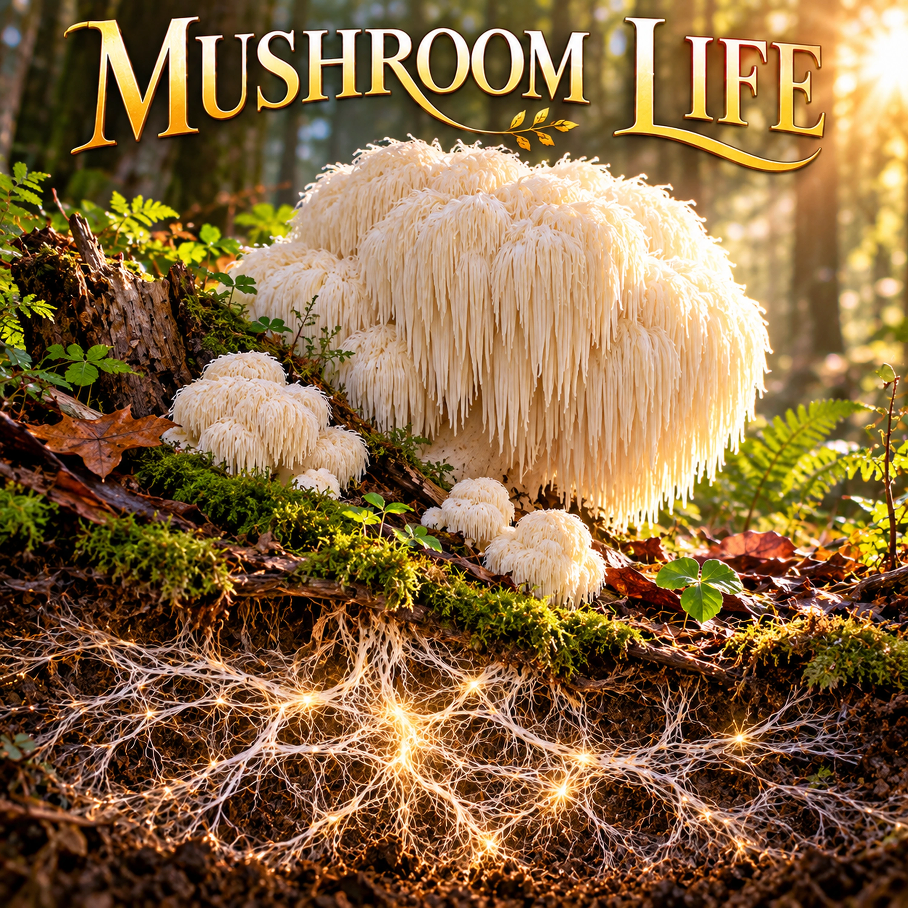

Mushroom Life

Lyrics
Verse 1
Ever wonder how mushrooms are grown?
It all depends on what kind
To grow them well, they have to be known
And their environment clearly defined.
Each species needs a special recipe
That is required to keep them around
Each has their own eccentricity
Grown right, the results are clearly profound.
Chorus
They don't have to shrink and lurk
They get what they need to grow
Even when you can't see the work
Something is changing down below.
Verse 2
Generally speaking, they all need one thing
A clean place for their predecessor to grow
Mycelium is from what Mushrooms spring
And it starts from way down below.
This part of growth is in the dark.
It's where the mycelium begins
After the spores have invaded the dark
That's when the mushrooms can pin.
Chorus
They don't have to shrink and lurk
They get what they need to grow
Even when you can't see the work
Something is changing down below.
Bridge
I remember when God came into my heart
I wasn't sure what came next.
I felt a bit in the dark
And I wasn't sure what to request.
And then I realized I was at the start
Of a beautiful spiritual journey
Once He actually lived in my heart
I knew I was no longer unworthy.
Chorus
Mushrooms don't have to shrink and lurk
They get what they need to grow
Even when you can't see the work
Something is changing down below.
Final Chorus
I don't have to shrink and lurk
He is what I need to grow
Even when I can't see His work
Change is happening, I know.
Devotional
Mushroom Life — When God Is Working Beneath the Surface
There is something remarkable about a mushroom. What we see above the ground is only a small part of a much larger living system. Beneath the surface, hidden from sight, an intricate network of mycelium develops, drawing nourishment from its surroundings and preparing for growth that will eventually become visible. Long before a mushroom appears, much has already happened.
The Apostle Paul wrote in Philippians 1:6, “he which hath begun a good work in you will perform it until the day of Jesus Christ.” What a reassuring promise! God’s work in the believer does not depend upon our ability to observe it. The absence of visible progress does not necessarily mean the absence of spiritual growth.
The song, Mushroom Life, begins with a simple observation about nature. Different mushrooms require different growing conditions. Each has its own characteristics, needs, and environment. Yet beneath those differences is a common principle: growth requires nourishment and conditions that sustain life.
Our spiritual development is not identical from person to person, either. Some believers experience dramatic changes early in their Christian walk. Others grow quietly, gradually developing patience, understanding, compassion, and faith. We may be tempted to compare ourselves with others, but God knows each of us completely. His work is personal, purposeful, and not confined to someone else’s timetable.
Colossians 2:6–7 encourages believers to walk in Christ, “Rooted and built up in him, and stablished in the faith.” Although mushrooms do not have roots, their hidden mycelial networks provide a useful illustration of the importance of what develops beneath the visible surface. Likewise, a Christian’s outward life is strengthened through an inward relationship with Christ, nourished by His Word, prayer, obedience, and fellowship.
Sometimes those hidden seasons are uncomfortable. We pray for direction but cannot yet discern the answer. We struggle with circumstances that seem unchanged. We wonder whether we are making any spiritual progress at all. Yet growth is not always immediately apparent.
In 1 Corinthians 3:6–7, Paul explains, “I have planted, Apollos watered; but God gave the increase.” The people involved had meaningful responsibilities, but the power to produce spiritual growth belonged to God. That distinction matters. We are called to faithfulness, not to manufacture the results that only God can bring.
The bridge of the song moves from the natural world into a personal recollection of salvation. It remembers the uncertainty of beginning a relationship with God, not knowing what would come next, and gradually recognizing that a new life had begun.
Second Corinthians 5:17 declares, “if any man be in Christ, he is a new creature: old things are passed away; behold, all things are become new.” This transformation is not merely an improvement of our former selves. It is the beginning of a new life in Christ.
There is also a beautiful opportunity to understand the song’s reference to worthiness through Ephesians 2:8–10. Scripture teaches that salvation is “by grace ... through faith” and “not of works.” We do not become worthy of salvation through our achievements or spiritual progress. Rather, God graciously receives us through Christ and creates us anew “unto good works.” Our acceptance rests upon His grace, not our merit.
And so the final chorus makes an important transition. The earlier choruses describe mushrooms receiving what they need to grow. The final chorus becomes a personal declaration of dependence upon God: “He is what I need to grow.”
That is the heart of the illustration. Spiritual growth is not simply a matter of trying harder, appearing stronger, or producing visible evidence that will impress others. It is a continuing relationship with the One who gives life.
There may be seasons when we cannot see what God is accomplishing. There may be times when the most significant changes are taking place quietly, beneath the surface of our daily lives. But we can trust His faithfulness, continue walking in obedience, and allow His Word to shape us.
We do not have to see every change to trust the One who is changing us. And when growth finally becomes visible, may we remember who gave the increase.
A Thought to Carry With You
What might God be developing in your life today that you cannot yet see? Perhaps the most important growth is not the part others notice, but the work God is doing within your heart.
Prayer
Heavenly Father, thank You for the work You are doing in my life, even when I cannot see it. Help me to trust Your timing, remain faithful in the quiet seasons, and draw my strength and nourishment from You. When I become discouraged by what seems like a lack of progress, remind me that You are faithful to complete the work You have begun. May the changes You make within me become evident in how I live, love, and serve others. In Jesus’ name, Amen.
Extra Info — Scripture Map
God completes His work: Philippians 1:6
God gives spiritual growth: 1 Corinthians 3:6–7
Rooted and built up in Christ: Colossians 2:6–7
New life in Christ: 2 Corinthians 5:17
Saved by grace, created for good works: Ephesians 2:8–10
What Listeners Are Saying
Selected public comments from SoundCloud
— UrbanPitchPromo